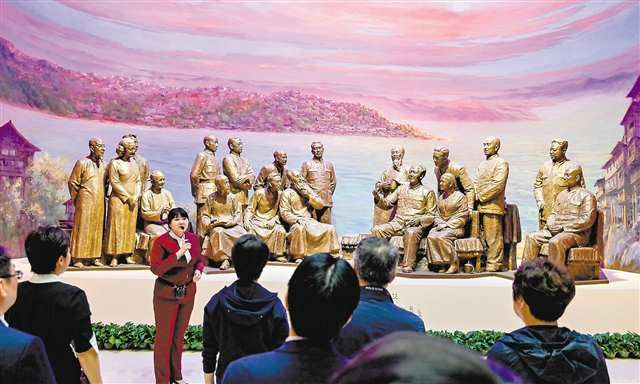
毛主席纪念堂
天安门广场南侧，1977年建成。北大厅内有3.45米高的汉白玉毛泽东坐像，瞻仰区安放水晶棺。
1976年9月9日毛泽东逝世后，中央决定在天安门广场南侧修建纪念堂。工程于1976年11月奠基，1977年9月9日毛泽东逝世一周年时正式开放。北大厅的汉白玉坐像高3.45米，瞻仰厅的水晶棺由江苏东海优质水晶熔炼加工而成；纪念堂建在原中华门旧址上，是广场中轴线的重要一段。
在地图上定位STORY ARCHIVE · 99 STORIES
按省份整理全部地点的背景故事。可以搜索人名、事件、口号，也可以只看某个省份；每张卡片都能回到地图上的具体位置。
故事依据公开报道、校史、地方志与纪念馆展陈整理；涉及民间传说或不同说法的，文中用“相传”“当地流传”等字样提示。

天安门广场南侧，1977年建成。北大厅内有3.45米高的汉白玉毛泽东坐像，瞻仰区安放水晶棺。
1976年9月9日毛泽东逝世后，中央决定在天安门广场南侧修建纪念堂。工程于1976年11月奠基，1977年9月9日毛泽东逝世一周年时正式开放。北大厅的汉白玉坐像高3.45米，瞻仰厅的水晶棺由江苏东海优质水晶熔炼加工而成；纪念堂建在原中华门旧址上，是广场中轴线的重要一段。
在地图上定位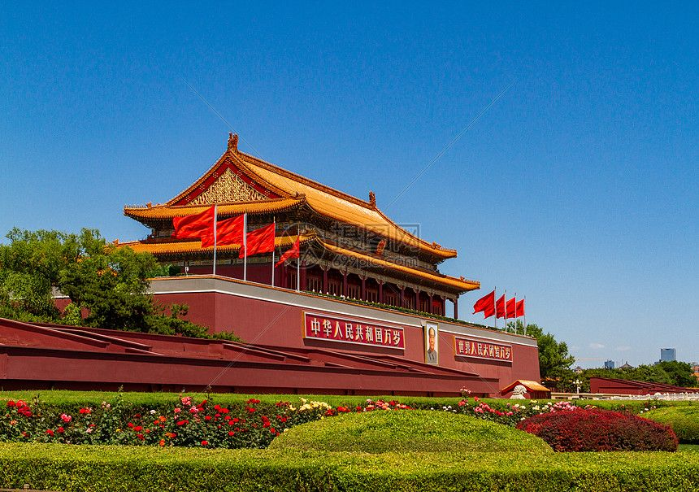
城楼两侧悬挂“中华人民共和国万岁”“世界人民大团结万岁”，是毛泽东时代沿用至今的国家象征性标语。
1949年10月1日，毛泽东在天安门城楼宣告中华人民共和国成立。城楼两侧最初悬挂的是“中华人民共和国万岁”和“中央人民政府万岁”，后来后一条改为“世界人民大团结万岁”。此后七十多年，这两条标语随城楼修缮反复重描，成为天安门最醒目的视觉符号。
在地图上定位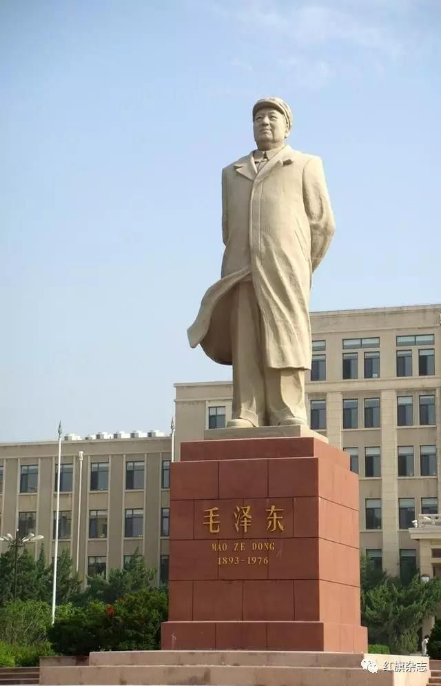
校园内毛泽东塑像，位于北三环东路校区。
北京化工大学的前身北京化工学院始建于1958年，是新中国为培养化工人才而新建的高校。校园里的这尊毛泽东塑像立于上世纪60年代后期，所在北三环东路校区后来成为学校的主校区；塑像与老教学楼一起，记录了这所行业高校从单科性学院走向多科性大学的过程。
在地图上定位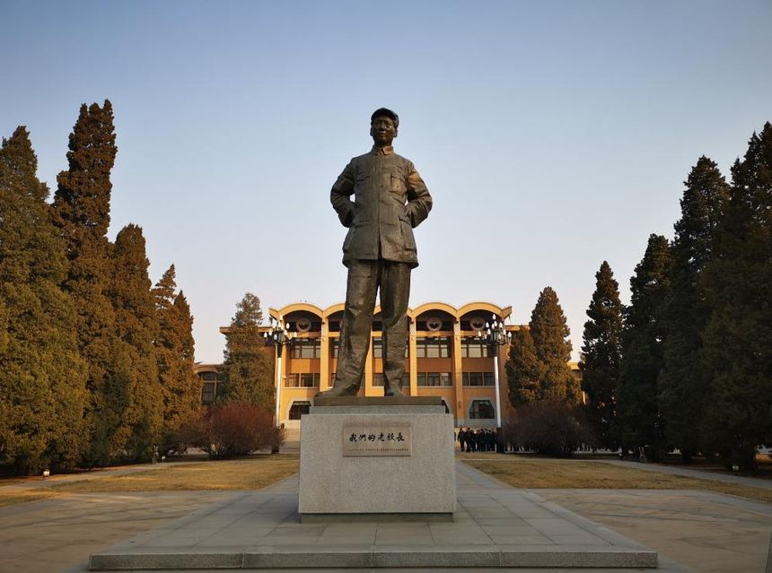
校园内毛泽东塑像，属北京高校早期塑像之一。
北京交通大学的前身可追溯到1896年创办的山海关北洋铁路官学堂，是中国近代最早的工程高等学府之一。校园里的毛泽东塑像立于上世纪60年代后期；在铁路学科调整、院系搬迁的岁月里，它一直留在校园中轴线上，成为交大人辨认老校区的一处坐标。
在地图上定位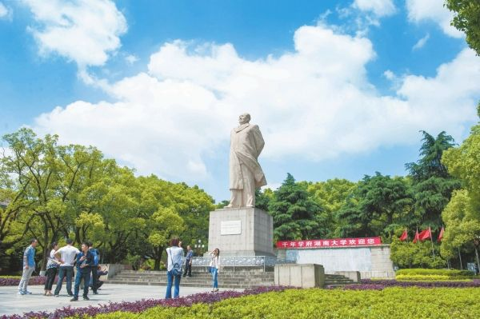
原北京钢铁学院毛泽东塑像，1967年落成，与对面的中国地质大学塑像形成“面对面”格局。
北京科技大学的前身北京钢铁学院，1952年由北洋大学、唐山交通大学等校的矿冶系科组建，是新中国第一所钢铁工业高等学府。1967年，钢院师生在校园里立起这尊塑像；它与对面北京地质大学的塑像几乎同时落成，隔学院路相望，成为“八大学院”时期留下的特殊景观。
在地图上定位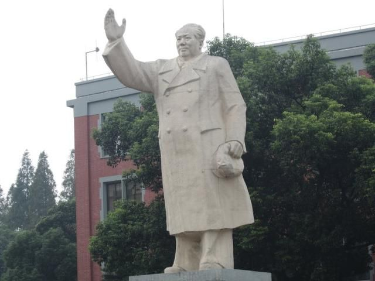
校园内毛泽东塑像，位于信息路校区。
北京体育大学的前身北京体育学院成立于1953年，是新中国第一所体育高等学府。校园里的毛泽东塑像立于上世纪60年代后期，所在信息路校区后来成为国家体育人才培养的重要基地；每逢毕业季，塑像前常能看到穿着学位服合影的学生。
在地图上定位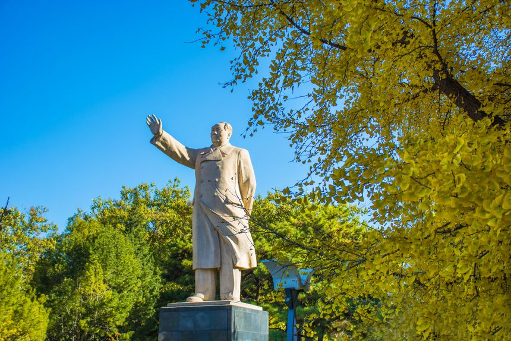
校园内毛泽东塑像，属北京高校保存的早期塑像之一。
北京邮电大学的前身北京邮电学院成立于1955年，是新中国第一所邮电高等学府。上世纪60年代后期，学校在校园中轴线上竖立毛泽东塑像；此后它长期出现在开学典礼、毕业合影和校园明信片中，成为几代北邮人共同的校园坐标。
在地图上定位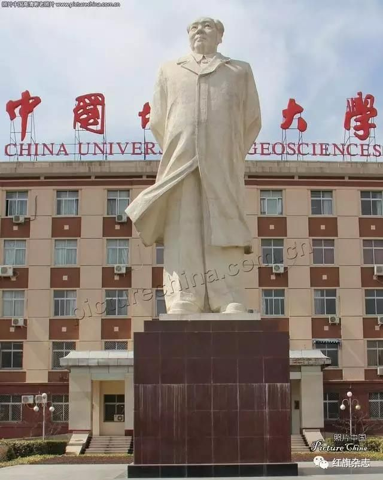
红山口校区毛泽东塑像。军事院校一般不对外开放，参观前需确认。
国防大学位于北京红山口，是全军最高军事学府，前身可追溯到抗日军政大学、军事学院等院校。校园里的毛泽东塑像与军校传统紧密相连；由于营区管理严格，这里通常不对外开放，普通访客只能在门外远望，塑像也少有清晰照片流传。
在地图上定位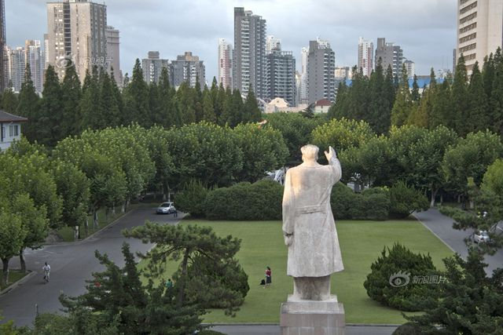
1967年落成的早期毛泽东塑像，与北京科技大学塑像隔学院路相望，是北京高校中保存较早的一尊。
1952年院系调整中，北京地质学院在学院路成立，是著名的“八大学院”之一。1967年，学校在校园中轴线上竖起这尊毛泽东塑像；它与路对面的北京钢铁学院塑像隔街相望，成为学院路上一组罕见的“面对面”校园像。两尊像都保留至今，见证了那条大学路的变迁。
在地图上定位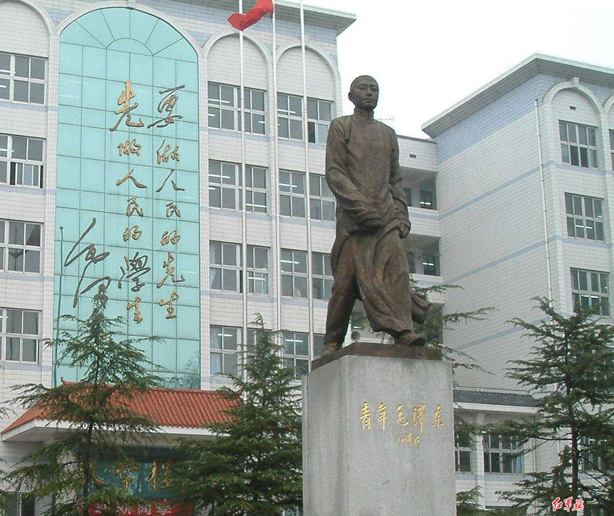
东校区校园内毛泽东塑像，邻近清华东路。
中国农业大学的前身可追溯到1905年创办的京师大学堂农科大学。东校区位于清华东路，校园里的毛泽东塑像立于上世纪60年代后期；它见证了这所农业名校从“北京农业大学”到“中国农业大学”的更名与发展，也陪伴了一代代农大学子的晨读与实习。
在地图上定位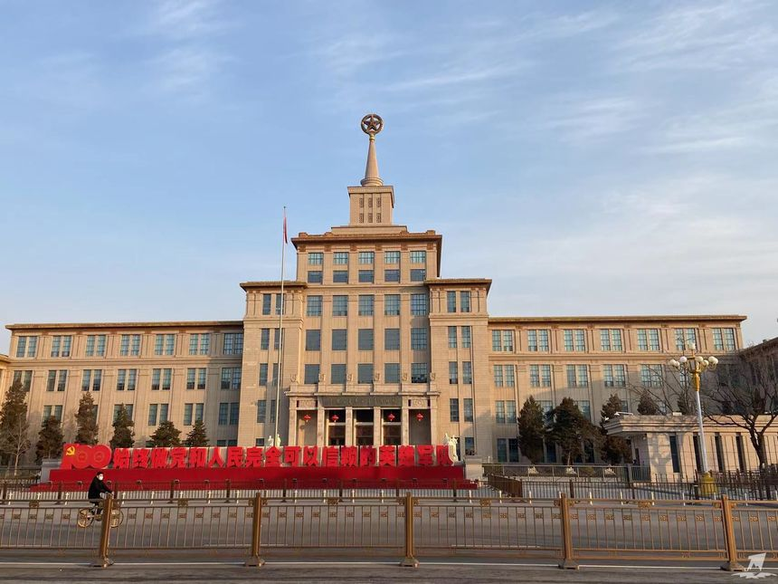
馆名由毛泽东题写，建筑顶部“中国人民革命军事博物馆”字样沿用至今。
中国人民革命军事博物馆是1959年国庆十周年“十大建筑”之一，1958年动工、1959年建成开放。馆名由毛泽东题写，建筑顶部的馆名大字沿用至今。建馆之初，全军调拨了大量文物，从北伐战争、土地革命到抗美援朝，这里成为新中国第一座综合性的军事博物馆。
在地图上定位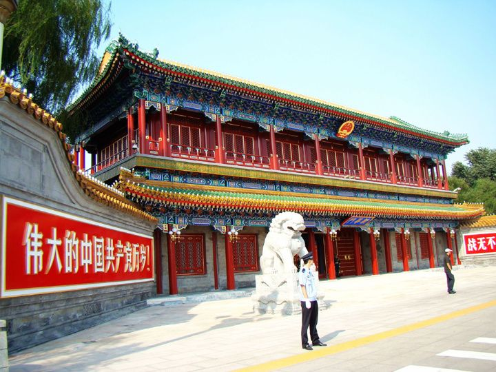
新华门内影壁为毛泽东手书“为人民服务”，是中国最知名的毛泽东题词遗存之一。
新华门原是乾隆年间相传为香妃而建的宝月楼，1913年辟为中南海正门并改今名。门内影壁上的“为人民服务”取自毛泽东1944年追悼张思德演讲的手迹；这五个字后来成为中国共产党的宗旨标识，也让这面影壁成为长安街上最著名的题词景观之一。
在地图上定位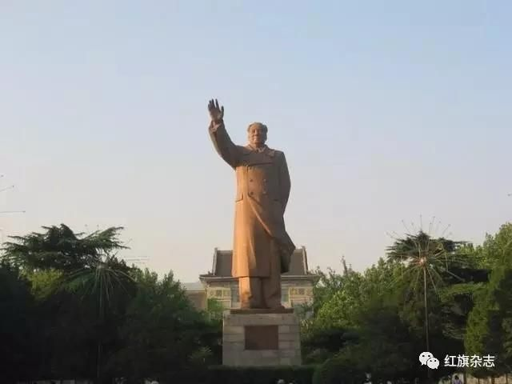
原军事交通学院校园内毛泽东塑像。军校营区通常不对外开放。
陆军军事交通学院位于天津海河东岸，是培养军交运输人才的高等军校。校园里的毛泽东塑像属于军校营区的一部分，平时不对外开放；它所在的教学区延续了军队院校整齐、朴素的布局，塑像也常被用作学员集合与宣誓的背景。
在地图上定位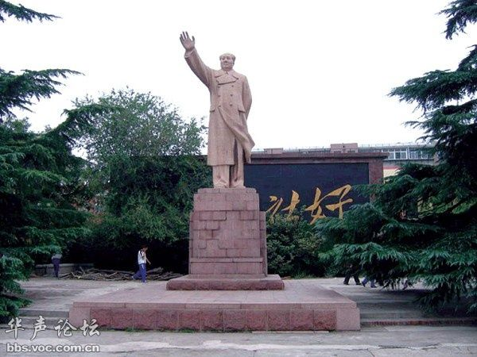
1967年建于原石家庄第一工人文化宫前。石家庄地区同式样毛泽东塑像曾有7尊，此尊为市中心地标。
1967年，石家庄在原第一工人文化宫前建起毛泽东塑像。石家庄是华北重要的纺织、医药工业城市，文革初期市区一度出现建像热潮，同一式样的塑像据称曾有7尊；这尊位于今天的人民广场，是保存下来且仍在原址附近的一尊，成为市中心的老地标。
在地图上定位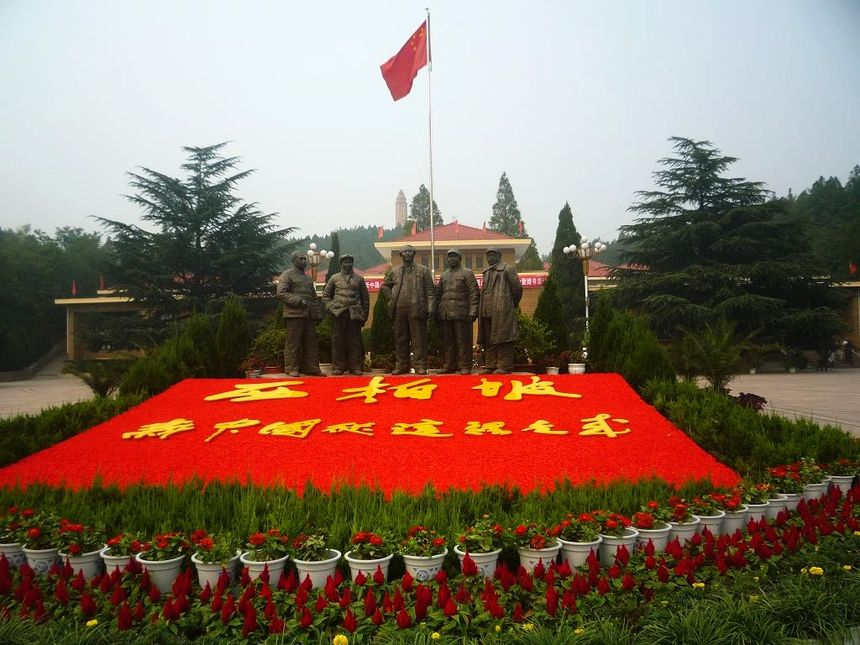
西柏坡纪念馆广场立有毛泽东、周恩来、朱德、刘少奇、任弼时五大书记铜像，是“新中国从这里走来”的红色地标。
1948年5月，毛泽东率中共中央机关来到西柏坡，在这里指挥辽沈、淮海、平津三大战役，召开七届二中全会，提出“两个务必”。1949年3月23日，中共中央离开西柏坡前往北平，毛泽东称之为“进京赶考”。纪念馆广场的五大书记铜像，纪念的正是这段“新中国从这里走来”的岁月。
在地图上定位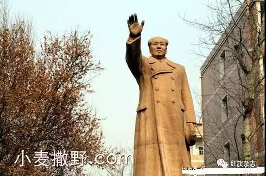
校园内毛泽东塑像，属河北高校保存的早期塑像之一。
石家庄铁道大学的前身是1950年创建的中国人民解放军铁道兵工程学院，是铁道兵唯一的高等学府。校园里的毛泽东塑像延续了军校时期的校园格局；1984年学校转归地方后，塑像仍留在校园中，见证这所“铁道工程师摇篮”的转型。
在地图上定位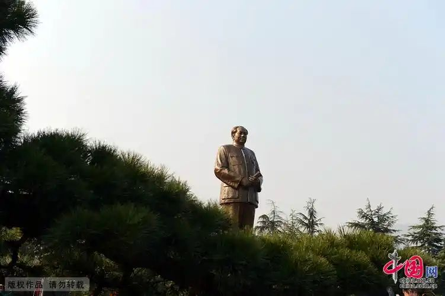
“农业学大寨”运动发源地。虎头山、大寨展览馆一带仍保留毛泽东时代标语与纪念景观。
1964年，毛泽东发出“农业学大寨”的号召，山西昔阳大寨由此成为全国农业战线的样板。大寨人劈山造田、修梯田的事迹被广泛报道，陈永贵也从大队党支部书记走上国务院副总理岗位。今天的虎头山、大寨展览馆和村口标语仍保留着那段历史；郭沫若的部分骨灰也安葬在虎头山。
在地图上定位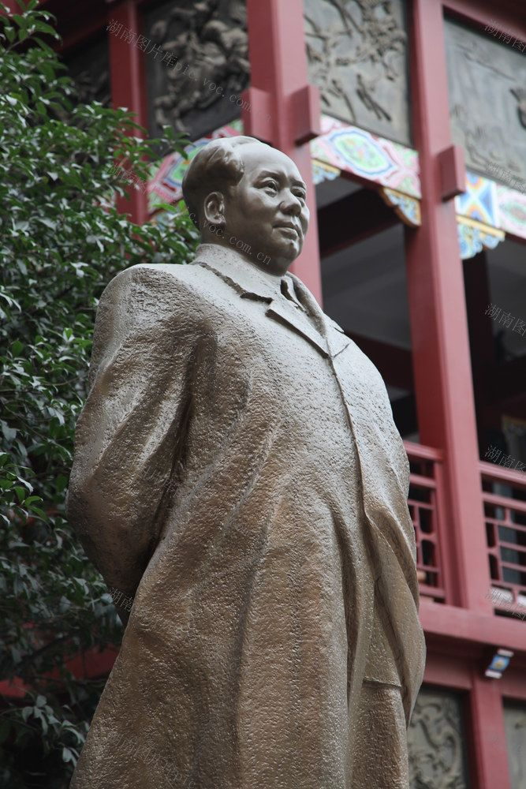
坞城校区毛泽东塑像，属山西高校保存的早期塑像。
山西大学的前身山西大学堂创办于1902年，是中国最早的三所国立大学之一。坞城校区的毛泽东塑像立于上世纪60年代后期；在太原高校中，它是保存较早、体量较大的一尊。塑像周围的法桐与老教学楼，构成了山大老校区最典型的校园景观。
在地图上定位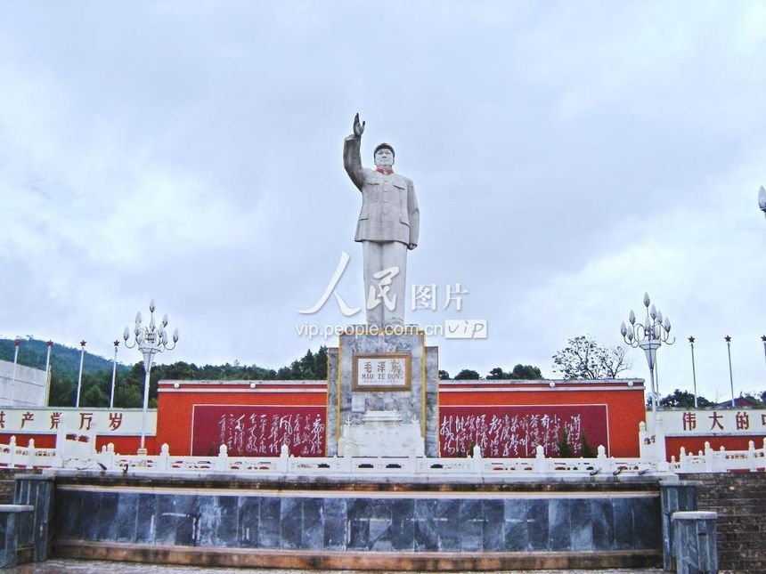
原中国冶金第二建设公司礼堂前毛泽东塑像，执帽挥手式，1967年建成，现为包头市不可移动文物。
包头是“一五”时期国家重点建设的钢铁基地，来自全国的建设者汇集到阴山脚下。1967年，原中国冶金第二建设公司在礼堂前建起这尊执帽挥手的毛泽东塑像；它后来被列为包头市不可移动文物，是草原钢城早期建设记忆的一部分。
在地图上定位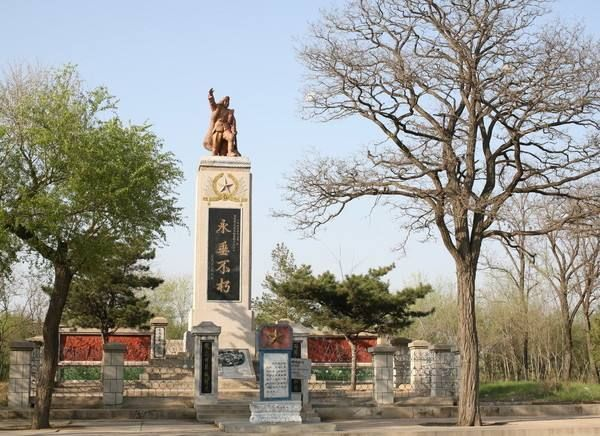
阜新解放广场毛泽东铜像，是现存早期大型毛泽东雕像中少见的铜质像；建像时曾发动全市捐献铜金属。
阜新是著名的“煤电之城”，海州露天矿曾是亚洲最大的露天煤矿。1969年，阜新在解放广场铸造毛泽东铜像；据当地资料，当时物资紧张，市里曾发动群众捐献铜盆、铜壶等铜器，汇集来的铜料最终铸成了这尊像。它是现存早期大型毛泽东铜像中少见的铜质像，也成为阜新城市记忆的一部分。
在地图上定位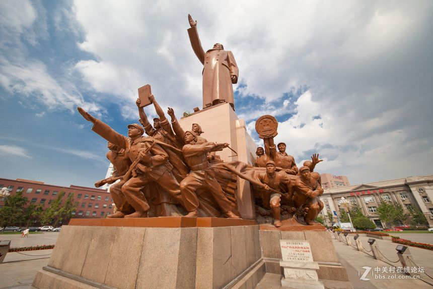
中山广场《毛泽东思想胜利万岁》群雕，毛泽东立像与58个人物组成，1969年建成，是新中国第一件超大型城市雕塑。
沈阳中山广场的《毛泽东思想胜利万岁》群雕建于1969年，由鲁迅美术学院等单位的艺术家集体创作。毛泽东立像周围环绕着58个人物，表现从新民主主义革命到社会主义建设的历程；群雕体量巨大、人物众多，被称为新中国第一件超大型城市雕塑，也是沈阳城市中心最醒目的红色地标。
在地图上定位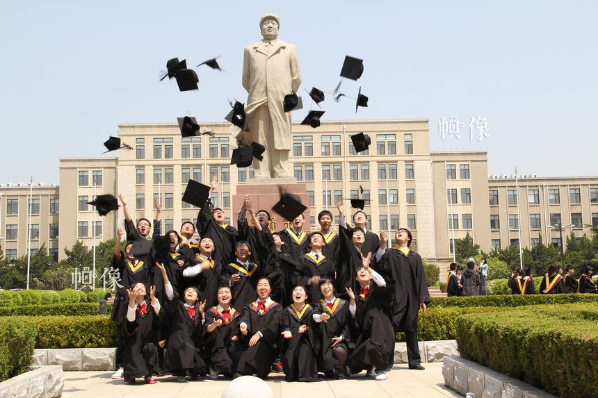
凌工路校区毛泽东塑像，属辽宁高校保存的早期塑像。
大连理工大学的前身大连工学院成立于1949年，是新中国为培养工业建设人才而创办的第一所新型正规大学。凌水河畔的校园里，毛泽东塑像立于上世纪60年代后期；它面朝主楼与广场，陪伴了大工从“工学院”到“理工大学”的成长。
在地图上定位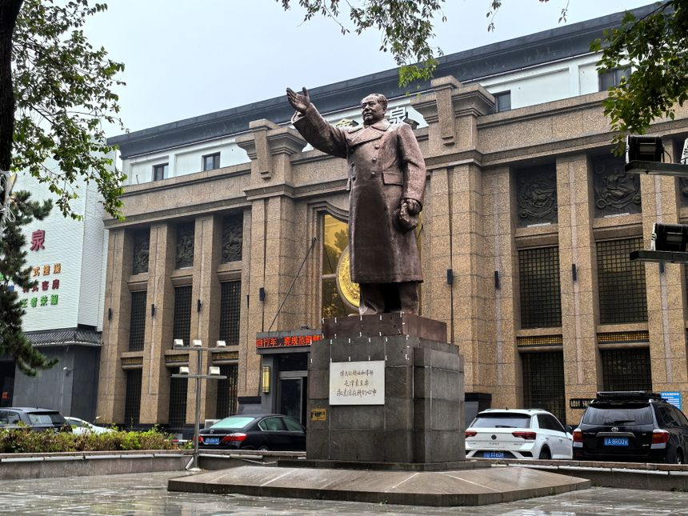
原抚顺工人文化宫旧址，像身约5米、底座约3米。实测坐标东经123°54′5″、北纬41°51′32″，基本保持原位。
抚顺是新中国重要的煤炭基地，素有“煤都”之称。1968年，原抚顺工人文化宫前建起这尊毛泽东塑像，像身约5米、底座约3米；后来文化宫一带改造，塑像基本留在原位。它的实测坐标东经123°54′5″、北纬41°51′32″，是抚顺市区保存较完整的一尊早期塑像。
在地图上定位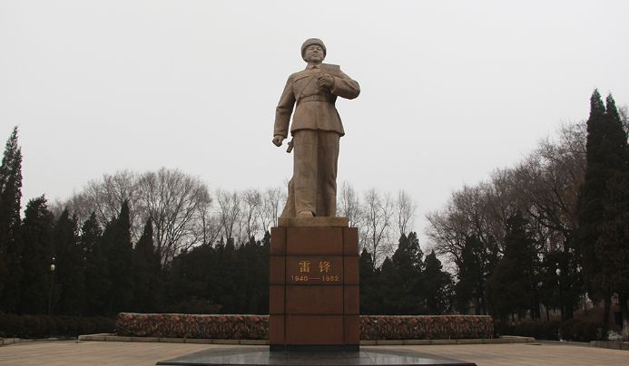
毛泽东1963年题词“向雷锋同志学习”。馆区保留题词碑、雷锋墓与生平陈列，是全国学雷锋活动的核心纪念地。
1962年8月15日，雷锋在抚顺因公殉职，年仅22岁。1963年3月5日，毛泽东题词“向雷锋同志学习”发表，全国掀起学雷锋热潮。抚顺雷锋纪念馆保留着雷锋墓、题词碑和生平陈列；馆区与雷锋生前所在部队驻地相邻，是全国学雷锋活动的核心纪念地之一。
在地图上定位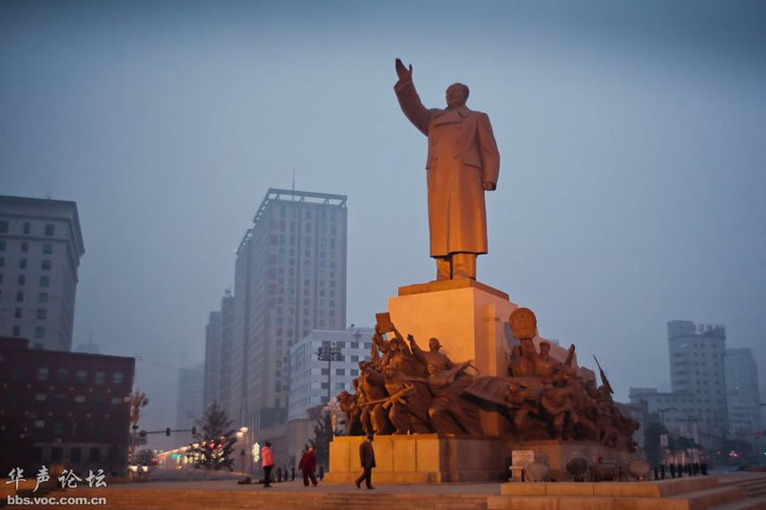
胜利公园内毛泽东塑像，冬季园内常以天安门造型冰灯装点。
长春胜利公园始建于1915年，日伪时期曾叫“儿玉公园”，抗战胜利后改名胜利公园。园内的毛泽东塑像立于上世纪60年代后期；每年冬季，公园常以天安门造型制作大型冰灯，塑像与冰灯、雪雕同框，成为长春人熟悉的冬日景象。
在地图上定位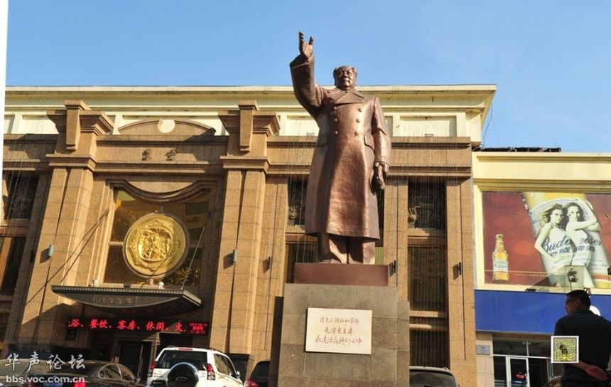
“工业学大庆”是1964年毛泽东发出的号召。纪念馆与石油会战旧址保留大量那个时代的标语、口号与工业遗产。
1960年，来自全国的数万石油职工在大庆展开石油大会战。王进喜带领1205钻井队，喊出“宁肯少活二十年，拼命也要拿下大油田”；1964年，毛泽东发出“工业学大庆”的号召。铁人王进喜纪念馆里的钻机、照片和口号，保存了那段艰苦创业的记忆，也让大庆成为新中国工业精神的重要象征。
在地图上定位原哈尔滨车辆厂旧址。塑像在1980年代被整体拆除并埋入地下，2002年开发建设时出土重立。
这尊塑像原在哈尔滨车辆厂厂区。上世纪80年代，各地陆续拆除毛泽东塑像，车辆厂的职工没有把它砸毁，而是整体放倒、埋入地下。2002年，爱建新城开发建设时，埋在地下的塑像被重新挖出并立回地面，如今站在城市源广场上。它的“失踪”与“归来”，是哈尔滨城市更新中一段颇具传奇色彩的故事。
在地图上定位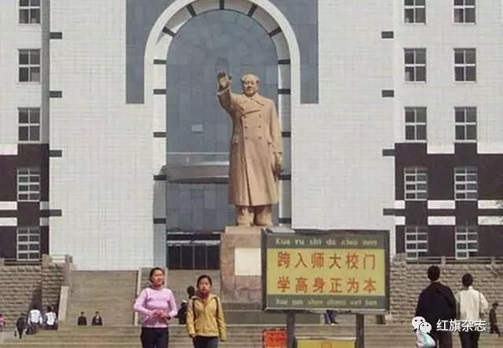
校园内毛泽东塑像，属哈尔滨高校保存的早期塑像。
哈尔滨工程大学的前身是1953年创办的中国人民解放军军事工程学院（哈军工），陈赓大将任首任院长。建校时，毛泽东为学院颁发训词，明确其培养军事工程技术人才的任务。校园里的毛泽东塑像延续着哈军工传统；1970年学院主体南迁，部分留在哈尔滨的系科后来发展成今天的哈工程。
在地图上定位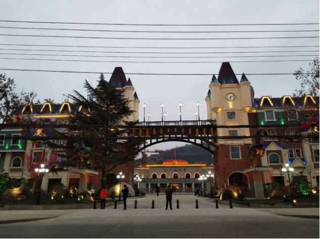
齐齐哈尔市区现存7座毛泽东塑像，此点为龙沙区工人文化宫一处；其余分布在厂区、学校等处。
齐齐哈尔是东北老工业基地的重要城市，市区一度保存7尊毛泽东塑像，分布在工人文化宫、厂区、学校等处，这在东北城市中较为少见。龙沙区工人文化宫前的这一尊，是其中最具代表性的一处；它见证了齐齐哈尔重工业时代的喧嚣，也保留了那一代工人的公共记忆。
在地图上定位原国营友谊农场（龙谊集团）办公楼前街心绿地，与1967年清华版塑像样式相同。
友谊县的前身是1954年苏联援建的国营友谊农场，是新中国第一个大型机械化国营农场。农场办公楼前的这尊毛泽东塑像，与1967年清华大学那版塑像样式相同；这说明当年的塑像图样、模具曾在垦区传播。对友谊农场而言，它既是时代印记，也是中苏农业合作时期的一段注脚。
在地图上定位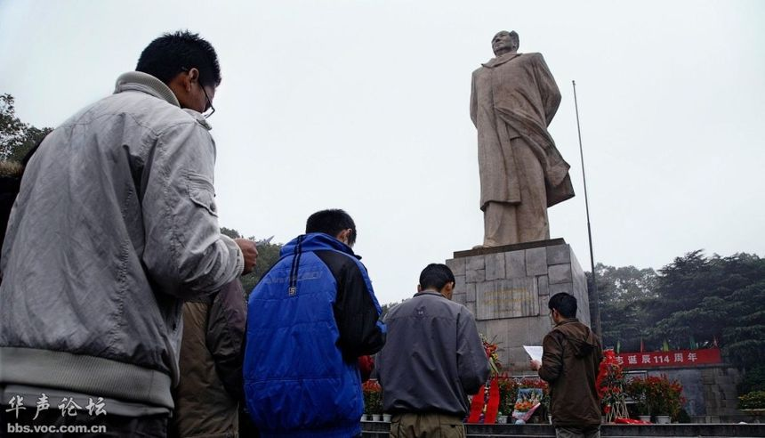
邯郸校区毛泽东塑像，上海高校保存的早期塑像之一，常出现在毕业照与校园导览中。
复旦大学创建于1905年，邯郸校区是学校1950年代以后逐步建成的核心校区。上世纪60年代后期，校园中轴线上竖起这尊毛泽东塑像；此后它见证了恢复高考、出国留学潮和复旦向综合性研究型大学的转型。今天，塑像周边仍是毕业照和校园导览的必经之处。
在地图上定位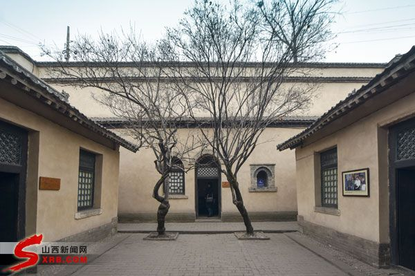
茂名北路120弄7号（甲秀里），1924年毛泽东在上海的寓所，现为毛泽东旧居陈列馆。
1924年，毛泽东携妻子杨开慧和年幼的毛岸英、毛岸青住进甲秀里，在国民党上海执行部工作，同时处理中共中央局事务。这是毛泽东在上海居住时间较长的一处寓所；后来旧居按原貌修复并对外开放，石库门弄堂里的陈设还原了当年一家人的生活场景。
在地图上定位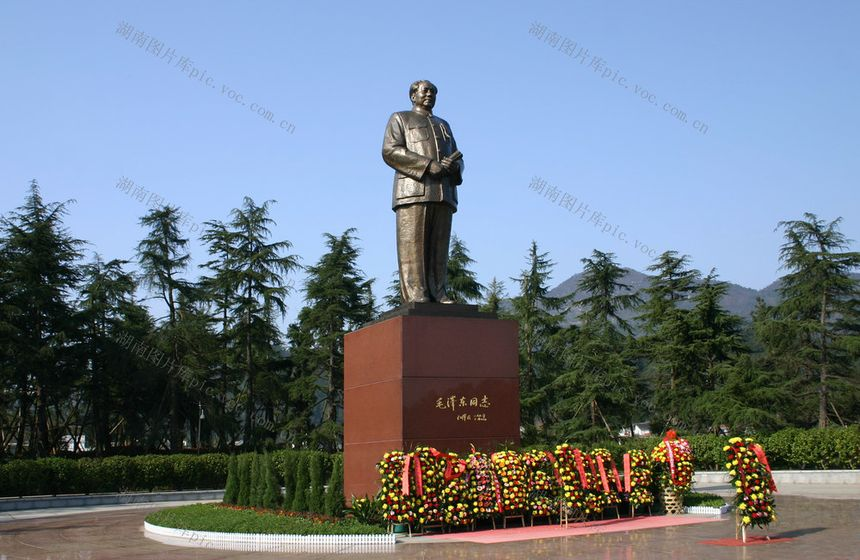
中山北路校区毛泽东塑像，属上海高校早期塑像。
华东师范大学成立于1951年，是新中国第一所社会主义师范大学，中山北路校区长期是学校本部。校园里的毛泽东塑像立于上世纪60年代后期；丽娃河、文史楼与塑像一起，构成华师大老校区最经典的校园意象，也承载了许多师范生的青春记忆。
在地图上定位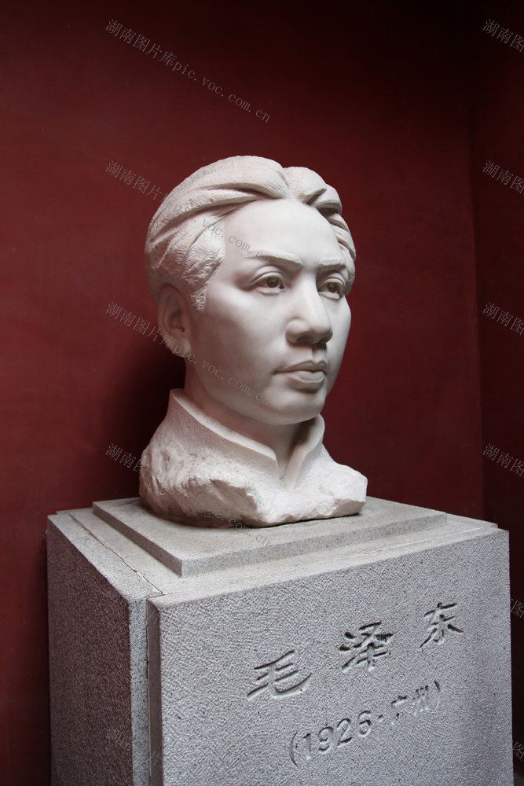
梅陇路校区毛泽东塑像，属上海高校早期塑像。
华东理工大学的前身华东化工学院成立于1952年，是新中国第一所单科性化工高等学府，由交通大学、震旦大学等校的化工系科合并组建。梅陇路校区的毛泽东塑像立于上世纪60年代后期；它见证了学校从化工学院发展为多科性大学，也陪伴了几代化工人的实验与实习岁月。
在地图上定位军工路校区毛泽东塑像，属上海高校早期塑像。
上海理工大学的前身是1906年创办的沪江大学，军工路校区保留着一批历史建筑。校园里的毛泽东塑像立于上世纪60年代后期；哥特式风格的老建筑与塑像同处一条校园轴线，形成一种独特的时代拼贴，也让这里成为上海高校中辨识度很高的取景地。
在地图上定位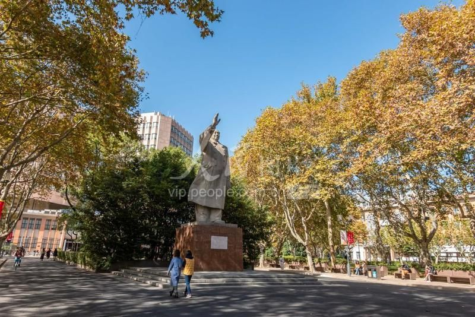
四平路校区毛泽东塑像，属上海高校早期塑像。
同济大学的前身是1907年创办的同济德文医学堂，早期以医学和工程著称。四平路校区的毛泽东塑像立于上世纪60年代后期；它所在的教学区后来建起图书馆、大礼堂和一批教学楼，塑像也因此成为同济老校园轴线上的一个固定参照。
在地图上定位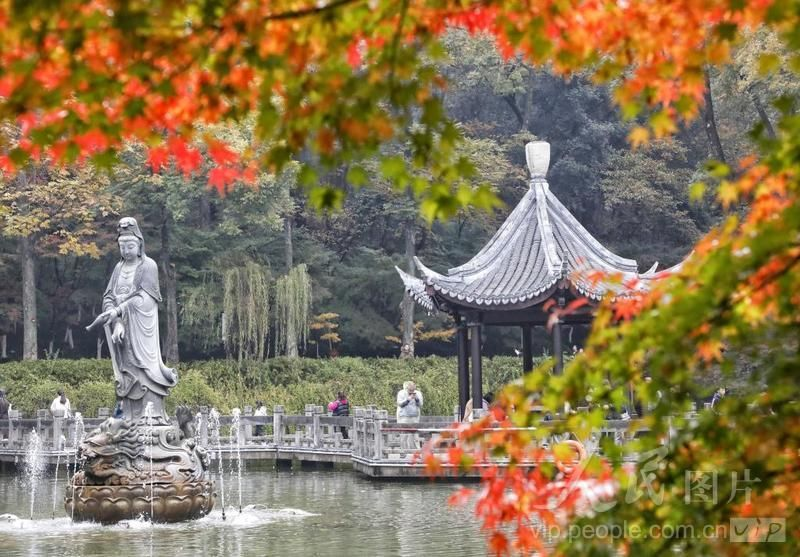
栖霞大道北侧与新仙东路交会处。1967年十月公社村民集资建造，是南京现存4座毛泽东雕像之一，市级文物保护单位，入选江苏省红色地名。
1956年1月11日，毛泽东视察南京栖霞区十月村，勉励当地农民组织起来、发展生产。1967年，十月公社的村民在当年毛泽东站立的地方集资建起这尊塑像；它是南京现存4座毛泽东雕像之一，后来被列为市级文物保护单位，并入选江苏省红色地名。
在地图上定位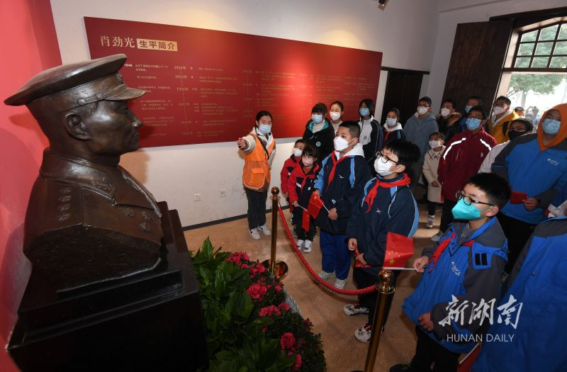
1958年毛泽东视察杭州小营巷，现为毛泽东视察小营巷纪念馆，是爱国卫生运动的重要纪念地。
1958年1月5日，毛泽东在杭州视察小营巷的爱国卫生工作，走进居民家中查看水缸、厕所和厨房。小营巷因此成为全国爱国卫生运动的样板，被称为“江南红巷”。今天的纪念馆保留了当年的巷貌与陈列，毛泽东视察过的墙门、水井仍在，是杭州老城里一处安静的红色纪念地。
在地图上定位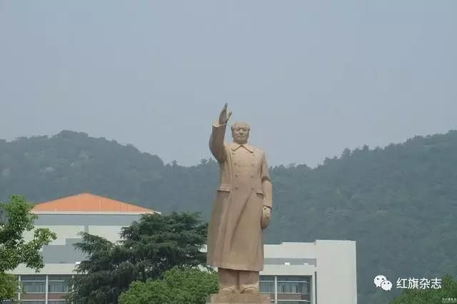
玉泉校区毛泽东塑像，属浙江高校保存的早期塑像。
浙江大学的前身求是书院创办于1897年，玉泉校区是学校1950年代以后建设的核心校区。校园里的毛泽东塑像立于上世纪60年代后期；它背靠老和山、面向教学区，见证了浙大从工科强校走向综合性大学的历程，也是玉泉校区最具辨识度的地标之一。
在地图上定位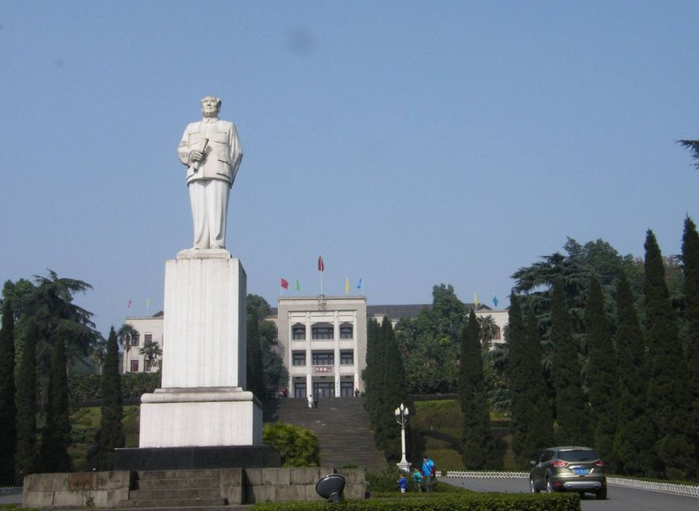
2018年“35所大学”名单收录。主校区位于阜阳市颍上县，校园内有毛泽东塑像；具体位置与现状建议到校前核实。
这处点位来自2018年网络流传的“35所大学”名单，校园位于阜阳市颍上县。公开资料对校内毛泽东塑像的建造年代、位置和现状记载很少；把它标在地图上，更多是提供一条线索。若计划实地探访，建议先向学校确认是否对外开放。
在地图上定位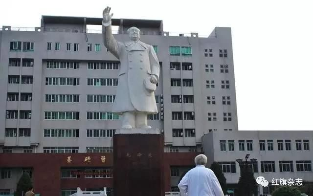
梅山路校区毛泽东塑像，属安徽高校保存的早期塑像。
安徽医科大学的前身是1926年创办于上海的东南医科大学，1949年内迁安徽，1952年迁至合肥，1954年改称安徽医学院。梅山路校区的毛泽东塑像立于上世纪60年代后期；它见证了这所医学院从上海西迁、在合肥扎根的过程，也陪伴了无数医学生的解剖课与临床实习。
在地图上定位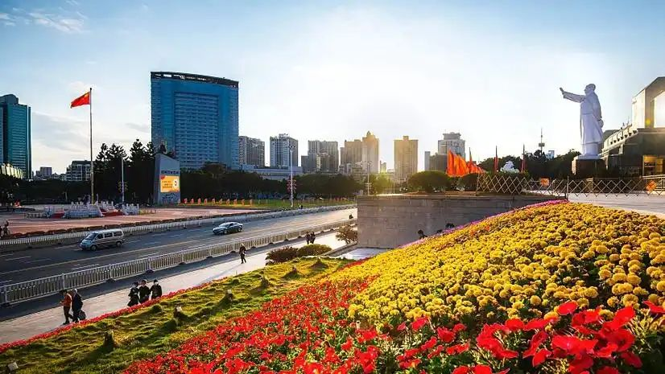
于山堂前、五一广场北侧的毛泽东塑像与观礼台，是福州市中心地标；近年曾对塑像和观礼台进行加固修复。
1969年，福州在五一广场北侧、于山堂前建起毛泽东塑像和观礼台。这里地处福州老城中轴线，北靠于山、南望闽江，塑像落成后成为福州大型集会和国庆游行的观礼场所。近年，福州市对塑像和观礼台进行过加固修复，它仍是市中心最具时代特征的地标之一。
在地图上定位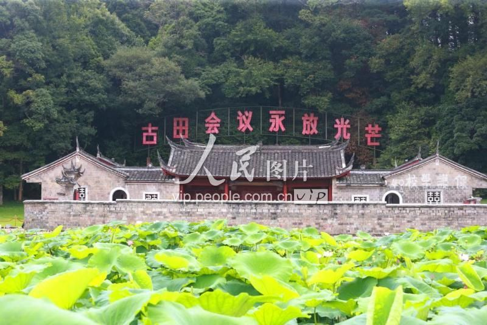
古田会议旧址。会址对面山体保留“古田会议永放光芒”大型标语，设有古田会议纪念馆与毛泽东铜像。
1929年12月28日至29日，中国工农红军第四军第九次党代表大会在福建上杭古田的廖氏宗祠召开，史称古田会议。会议确立了“思想建党、政治建军”的原则，是人民军队建设史上的重要里程碑。会址对面的山体上保留着“古田会议永放光芒”大型标语，2014年全军政治工作会议也在这里召开。
在地图上定位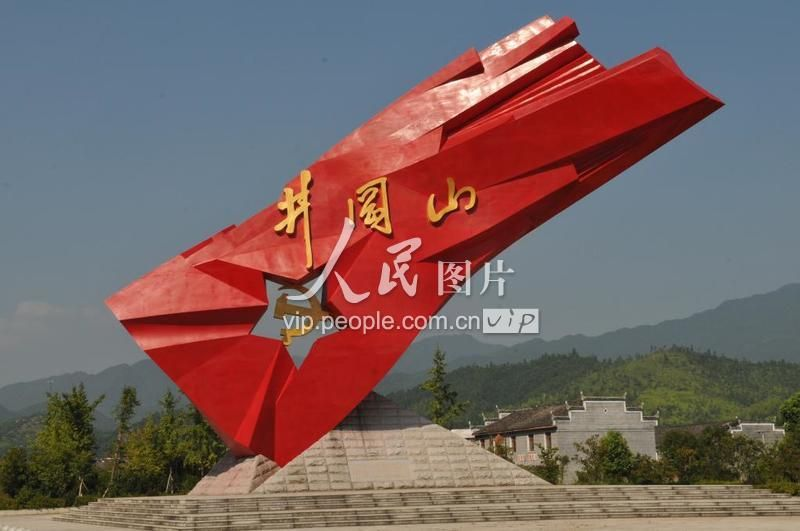
茨坪毛泽东铜像与井冈山革命博物馆。“星星之火，可以燎原”是井冈山最具代表性的毛泽东语录景观。
1927年秋收起义受挫后，毛泽东率部向井冈山转移，在茨坪一带建立中国第一个农村革命根据地。1928年，朱德、陈毅率部上山与毛泽东会师；1930年，毛泽东写下《星星之火，可以燎原》。1993年，茨坪立起毛泽东铜像，与旧居、井冈山革命博物馆共同构成今天井冈山最核心的红色景观。
在地图上定位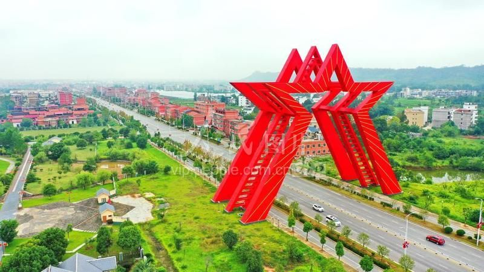
叶坪革命旧址群与红军广场，中华苏维埃共和国临时中央政府旧址所在地，是中央苏区核心纪念地。
1931年11月，中华苏维埃第一次全国代表大会在瑞金叶坪谢氏宗祠召开，中华苏维埃共和国临时中央政府宣告成立，毛泽东当选中央执行委员会主席，“毛主席”的称呼由此而来。叶坪红军广场上保留着红军烈士纪念塔、检阅台等旧址；这里也因此被称为“红色故都”的心脏。
在地图上定位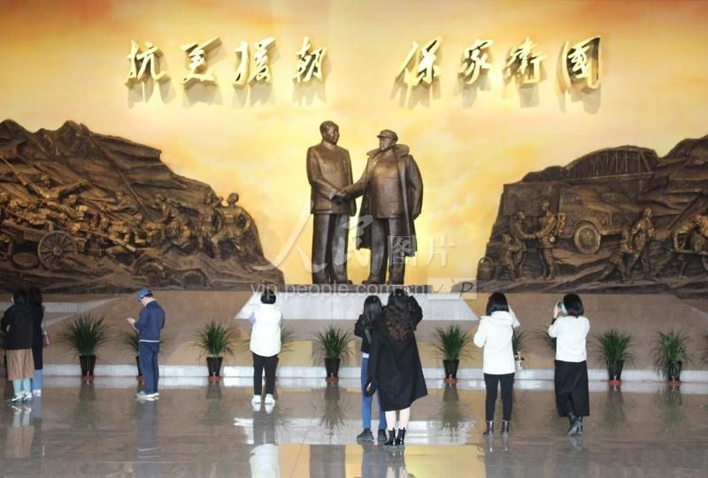
安源煤矿厂区旁的毛泽东铜像广场，纪念1921—1922年毛泽东到安源考察并组织工人运动。
1921年秋，毛泽东到安源煤矿考察，随后多次派李立三、刘少奇等到安源组织工人。1922年9月，安源路矿工人大罢工爆发，提出“从前是牛马，现在要做人”的口号，成为中国工人运动史上的一次重要胜利。安源毛泽东铜像广场就建在煤矿厂区旁，纪念这段工人运动岁月。
在地图上定位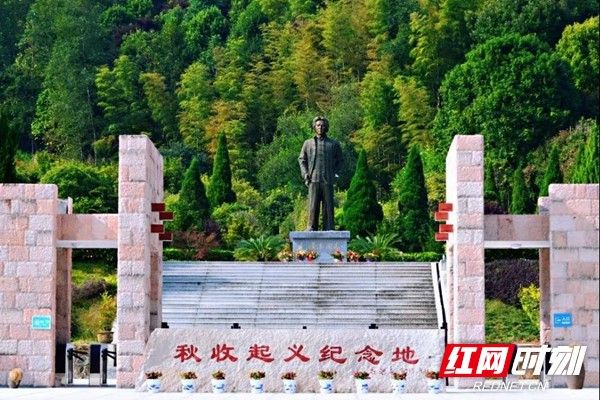
秋收起义铜鼓纪念地广场立有青年毛泽东铜像，纪念1927年毛泽东在铜鼓领导秋收起义。
1927年9月，毛泽东在铜鼓领导秋收起义第三团的行动。此前他从安源赴铜鼓途中，在浏阳张家坊被民团抓住，靠机智脱险。铜鼓萧家祠保留着毛泽东当年的住处；今天的纪念地立有青年毛泽东铜像，山城铜鼓也因此被称为“秋收起义策源地”之一。
在地图上定位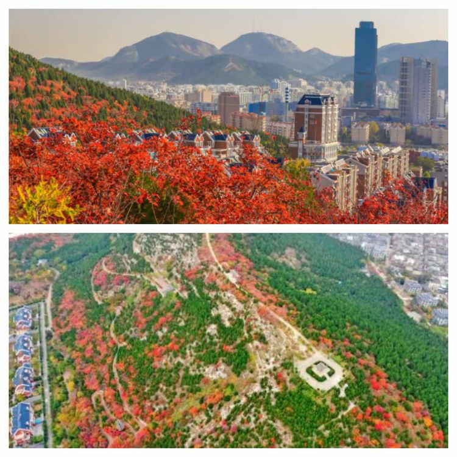
英雄山赤霞广场毛泽东塑像，1999年12月由山东省工业展览馆迁至此处，像高12.26米。
这尊塑像1968年原建于山东省工业展览馆前，1999年12月迁到英雄山赤霞广场，像高12.26米。济南市区现存5尊大型毛泽东塑像，赤霞广场这一尊体量最大、位置最显著。迁建时，塑像被妥善保护并重新立起，成为济南城市雕塑保护的一次特殊案例。
在地图上定位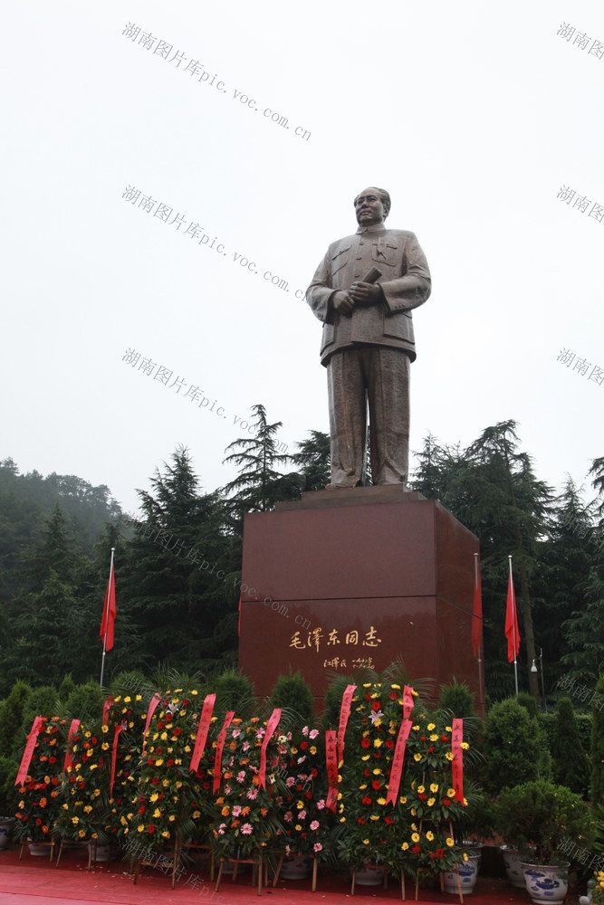
东方红广场毛泽东塑像，1967年10月落成，通高约16米，是济南高校的标志性景观。
1967年10月，山东师范学院（今山东师范大学）在东方红广场建成毛泽东塑像，通高约16米。它落成于文革初期全国高校建像潮中，是济南高校里体量最大的一尊。广场后来成为学校集会、开学典礼和毕业合影的场所；塑像与背后的教学楼一起，构成山师人最熟悉的校园画面。
在地图上定位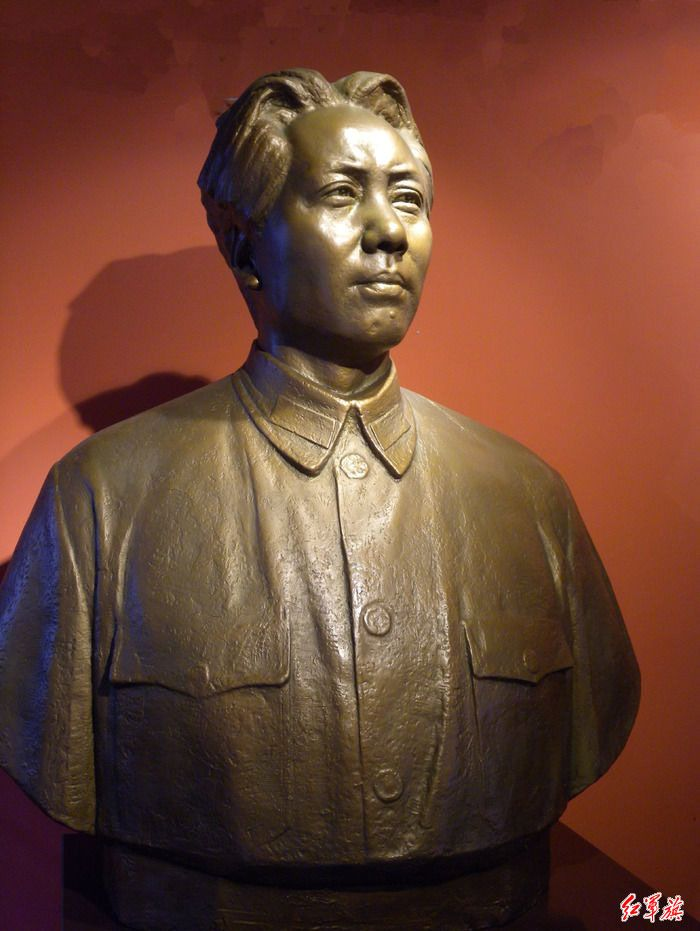
校园内（原经八路一小）毛泽东塑像，济南市区现存大型塑像之一，像前有影壁。
这尊塑像位于济南经八路小学（原经八路一小）校园内，像前有一座影壁。上世纪60年代后期，济南不少学校、工厂在院落中轴线建毛泽东塑像，并配建影壁、标语墙；经八路小学这一组因保存完整而显得少见。它也是济南市区现存5尊大型塑像之一。
在地图上定位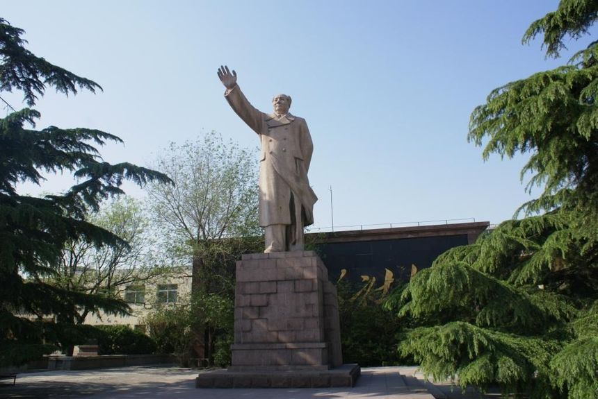
原北园人民公社所在地。1958年毛泽东视察北园，1967年建毛泽东塑像与标语墙，现为北园中学校园。
1958年，毛泽东视察济南市北园人民公社，人民公社化运动随后在山东迅速推开。1967年，北园人在当年视察的地方建起毛泽东塑像和标语墙；后来公社旧址改为北园中学，塑像与标语墙仍留在校园里。对学生来说，这是一段就发生在教室门口的地方史。
在地图上定位医院院内毛泽东塑像，济南市区现存5尊大型文革时期塑像之一。
山东省立医院是济南老城的重要医疗机构，其前身可追溯到清末的教会医院。医院院内的这尊毛泽东塑像，是济南市区现存5尊大型文革时期塑像之一；在医院这样的公共场所保留大型塑像，在同类遗存中并不多见。它安静地立在院区里，见证了医院百年来的扩建与变迁。
在地图上定位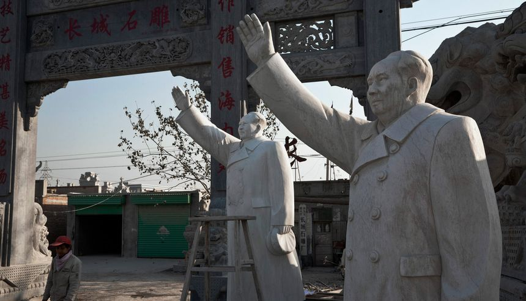
山东省农业科学院毛泽东铜像，2013年12月26日揭幕，像高4.5米，纪念毛泽东两次视察省农科院。
毛泽东曾于1958年、1959年两次视察山东省农业科学院。2013年12月26日，在毛泽东诞辰120周年之际，省农科院为纪念这两次视察立起一尊毛泽东铜像，像高4.5米。铜像所在的院区，是山东农业科技研发的重要基地；这段渊源也让农科院成为济南红色参观线路的一站。
在地图上定位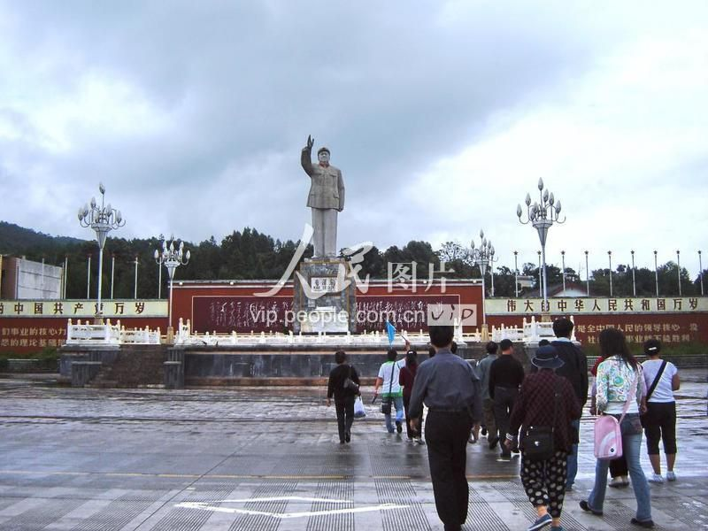
山城区红旗街与长风路交叉口，1968年建成，通高12.26米。是鹤壁老城区的地标，也是豫北少见的街头大型毛泽东塑像。
鹤壁因煤建市，红旗街是山城区老城的中心。1968年，鹤壁在红旗街与长风路交叉口建成这尊毛泽东塑像，通高12.26米，数字暗合毛泽东的生日。豫北地区保存下来的街头大型毛泽东塑像不多，这一尊因此成为鹤壁老城区最具辨识度的地标。
在地图上定位第一拖拉机制造厂门前毛泽东塑像，1968年国庆前夕建成。头顶和食指装有不锈钢避雷针，表面涂有机硅。
第一拖拉机制造厂是“一五”时期苏联援建的重点工程，新中国第一台“东方红”拖拉机就诞生在这里。1968年国庆前夕，一拖在厂门前建成毛泽东塑像；工人们给塑像的头顶和食指装上了不锈钢避雷针，表面涂有机硅防护。塑像与厂门、厂区一起，成为洛阳涧西工业遗产街区的重要组成。
在地图上定位南街村东方红广场，1993年立毛泽东雕像，基座一侧写着“毛泽东不是神，毛泽东思想胜过神”。村内保留大量毛泽东时代标语、语录墙与宣传画。
1993年，临颍南街村在东方红广场立起毛泽东雕像，基座一侧写着“毛泽东不是神，毛泽东思想胜过神”。南街村在改革开放后坚持集体所有制，走“共同富裕”的集体经济道路，同时保留大量毛泽东时代标语、语录墙和宣传画，一度被称为“红色亿元村”。这尊雕像也因此成为观察南街村模式的一个入口。
在地图上定位金水路与人民路交叉口西南角。像高12.26米、基座5.16米，水泥质，河南省重点文物保护单位。
1968年，郑州人民广场建成毛泽东塑像，像高12.26米、基座5.16米。12.26对应毛泽东的生日，5.16则对应1966年《五一六通知》发出的日子；这种用数字表达政治纪念的方式，在文革时期的塑像中并不罕见。它位于金水路与人民路交叉口，是郑州老城中心的地标，现为河南省重点文物保护单位。
在地图上定位红旗渠纪念馆与青年洞景区。“自力更生、艰苦奋斗”是红旗渠精神的标志性口号，也是毛泽东时代典型标语。
上世纪60年代，河南林县人民在太行山腰开凿红旗渠，用十年时间建成引漳入林的水利工程。总干渠长70多公里，削平山头、凿通隧洞，被称为“人工天河”。“自力更生、艰苦奋斗”的红旗渠精神由此而来；纪念馆和青年洞景区保留了当年施工的实物与影像，是理解那段历史最直观的地方。
在地图上定位1967年铸造的毛泽东塑像。1980年代拆除后放置仓库，1999年重新立在职工住宅区门前。
1967年，南阳柴油机厂铸造了这尊毛泽东塑像。1980年代，各地掀起拆除毛泽东塑像的风潮，这尊像被从台座上取下，放进仓库保存。1999年，厂里的职工又把它重新立在职工住宅区门前。它的“拆而未毁、尘封再立”，是那个年代许多塑像命运的一个缩影。
在地图上定位建设东路校区毛泽东塑像，属河南高校保存的早期塑像。
河南师范大学位于新乡，建设东路校区长期是学校本部。校园里的毛泽东塑像立于上世纪60年代后期，是河南高校中保存下来的早期校园像之一。它所在的老校区承载了几代河南师范人的记忆；每到毕业季，塑像前总有人排队合影。
在地图上定位武汉剧院门前毛泽东雕像，1968年落成。当年同批建造的三座中，仅存这一座。
1968年，武汉剧院门前竖起这尊毛泽东雕像。当年同批建造的共有三座，分别位于武汉的不同地标；后来另外两座陆续拆除，只有这一座保留下来。武汉剧院建于1950年代，是汉口的重要文化设施；雕像与剧院立面一起，构成了解放大道旁极具时代感的一组城市景观。
在地图上定位珞喻路校区毛泽东塑像，属武汉高校保存的早期塑像。
华中科技大学的前身华中工学院成立于1952年，是院系调整中由武汉大学、湖南大学等校工科合并组建的全国重点工科院校。喻家山下的校园里，毛泽东塑像立于上世纪60年代后期；它面朝教学区，见证了华工从工科院校发展为综合性大学的历程，也是“喻家山”校园记忆的一部分。
在地图上定位毛泽东1927年在此主持中央农民运动讲习所，旧址现为纪念馆，大操场立有毛泽东雕像。
1927年3月至6月，毛泽东在武昌红巷13号主持中央农民运动讲习所，培养来自全国各地的农民运动骨干。旧址原为清末的北路学堂，后来成为农讲所校舍；毛泽东、彭湃、恽代英等都曾在此授课。今天，大操场上的毛泽东雕像再现了他当年讲课的场景，旧址纪念馆保留着教室、宿舍和农具陈列。
在地图上定位珞珈山校园内毛泽东塑像，属武汉高校保存的早期塑像。
武汉大学的前身自强学堂创办于1893年，珞珈山校园由美国建筑师开尔斯设计，老斋舍、图书馆和樱花大道闻名全国。校园里的毛泽东塑像立于上世纪60年代后期；它位于狮子山下的校园轴线上，与珞珈山的绿色屋顶、樱花树一起，成为武大最容易被认出的画面之一。
在地图上定位湘潭大学南门毛泽东铜像。毛泽东亲笔题写“湘潭大学”校名，铜像是校园标志性景观。
1958年，湘潭大学创办，毛泽东亲笔题写校名。校方资料记载，他还嘱托“一定要把湘潭大学办好”。南门内的毛泽东铜像因此成为学校最重要的精神标识；每年新生入学、毕业离校，许多湘大人都会在铜像前合影。对湘潭而言，这所大学也是毛泽东家乡最高学府之一。
在地图上定位韶山冲上屋场，土木结构“凹”字形农舍，毛泽东出生与成长地，全国重点文物保护单位。
1893年12月26日，毛泽东出生在韶山冲上屋场这栋土木结构的“凹”字形农舍里。1910年，他离开韶山外出求学；1925年，他又回到家乡开展农民运动，在阁楼上建立中共韶山支部。故居在1929年遭到破坏，1950年按原貌修复；1959年毛泽东回韶山时，写下“别梦依稀咒逝川，故园三十二年前”。
在地图上定位1993年12月揭幕。铜像高6米、基座4.1米，总高10.1米，重3.7吨，是韶山红色旅游的核心地标。
1993年12月，为纪念毛泽东诞辰100周年，韶山在毛泽东故居附近的广场上立起这尊铜像。铜像高6米、基座4.1米，通高10.1米，重3.7吨，由南京晨光机器厂铸造。揭幕前后，当地流传着“日月同辉”、寒冬杜鹃绽放等说法，这些细节后来成为韶山红色旅游中最常被讲述的故事。
在地图上定位湖南大学东方红广场毛泽东塑像，通高19.76米，是长沙最具代表性的校园毛泽东像。
1950年，毛泽东为湖南大学题写校名。1968年，学校在东方红广场立起这尊毛泽东塑像，通高19.76米，数字暗合1976年毛泽东逝世。广场背靠岳麓山、面向湘江，是湖南大学校园轴线的核心；塑像、老图书馆和岳麓书院一起，构成长沙最经典的大学景观之一。
在地图上定位2009年12月26日落成。高32米、长83米、宽41米，由8000多块永定红花岗岩拼接，是全国最大的青年毛泽东艺术雕塑。
2009年12月26日，橘子洲青年毛泽东艺术雕塑落成。雕塑高32米、长83米、宽41米，由8000多块永定红花岗岩拼接而成，表现的是1925年青年毛泽东在橘子洲头思考中国命运的形象。那一年，毛泽东写下《沁园春·长沙》，“问苍茫大地，谁主沉浮”成为雕塑最贴切的注脚。
在地图上定位校园内毛泽东塑像。军校营区通常不对外开放。
国防科技大学的前身是1953年创办的哈尔滨军事工程学院，1970年主体南迁长沙，1978年改建为国防科技大学。校园里的毛泽东塑像延续着哈军工的传统；这里后来研制出“银河”系列巨型计算机，是中国高性能计算的重要起点。军校营区管理严格，普通访客通常不能进入。
在地图上定位毛泽东青年时期求学与工作地，旧址现为纪念馆。校园与周边是长沙经典的红色研学线路。
1913年至1918年，毛泽东在湖南第一师范求学；1920年至1922年，他又回到母校担任附小主事。求学期间，他坚持冷水浴、长途游学，写下大量读书笔记；1950年，他为母校题词“要做人民的先生，先做人民的学生”。今天的旧址保留着第八班教室、自习室和水井，是长沙最经典的红色研学线路之一。
在地图上定位清水塘长沙市博物馆院内毛泽东塑像，邻近中共湘区委员会旧址。
1921年秋，毛泽东与杨开慧租住长沙清水塘22号，这里成为中共湘区委员会机关。毛泽东在此领导湘区工人运动，杨开慧协助整理文件、接待同志，他们的孩子也在这里生活。旧址现为长沙市博物馆的一部分，院内的毛泽东塑像与清水塘、旧居一起，记录了这对革命夫妻在长沙的岁月。
在地图上定位秋收起义文家市会师纪念馆，会师广场立有大型红旗雕塑；是秋收起义部队会师转兵之地。
1927年9月19日，秋收起义部队在浏阳文家市里仁学校会师。面对攻打长沙受挫的形势，毛泽东主张放弃攻打中心城市，转向敌人力量薄弱的农村山区。他用“小石头要打烂大水缸”作比喻，说服大家向罗霄山脉进军。这次转兵，被视为中国革命从城市转向农村、走上“农村包围城市”道路的重要起点。
在地图上定位毛泽东1926年在此主办第六届农民运动讲习所，旧址现为纪念馆，是广州重要的红色史迹。
1926年5月至9月，毛泽东在广州主办第六届农民运动讲习所，所址设在番禺学宫。学员来自全国20个省区，共300多人；毛泽东、彭湃、恽代英等曾在此授课。农讲所培养了大批农民运动骨干，毛泽东关于农民问题的思考也在这里进一步成形。旧址现为纪念馆，保留着课堂、宿舍和农讲所时期的陈列。
在地图上定位南宁人民公园内，1978年建成，记录1958年毛泽东在南宁接见广西各族群众的史事。
1958年1月，毛泽东在南宁主持中央工作会议，史称“南宁会议”。会议期间，他在人民公园接见广西各族群众，成为广西民族团结史上的一段佳话。1978年，广西在当年接见的地方建成“毛主席接见广西各族人民纪念馆”，馆内陈列着照片、实物和当年接见场景的复原。
在地图上定位原广东省南海渔业总公司旧址。1968年立毛泽东铜像，是海南少见的早期毛泽东铜像。
1968年，儋州白马井的渔业企业在厂区立起这尊毛泽东铜像。白马井是北部湾畔的重要渔港，曾属广东省南海渔业总公司；铜像是海南保存下来的早期毛泽东铜像之一。后来企业改制、渔港变迁，铜像仍留在原地，面朝大海，见证着这座渔港的兴衰。
在地图上定位北碚校区毛泽东塑像，属重庆高校保存的早期塑像。
西南大学由原西南师范大学、西南农业大学等合并组建，北碚校区可追溯到1906年的川东师范学堂。抗战时期，北碚是迁建区和文化区，许多学校、科研机构在此落脚。校园里的毛泽东塑像立于上世纪60年代后期；袁隆平就是从这里的西南农学院走上杂交水稻研究之路。
在地图上定位馆内毛泽东水泥塑像，2014年由原址整体搬迁而来，是重庆工业遗产保护的代表性案例。
重庆工业博物馆建在大渡口重钢型钢厂旧址上，保留着老厂房、钢梁和烟囱。馆内的毛泽东水泥塑像原本立在老厂区，2014年因工业遗产保护被整体搬迁到博物馆。塑像与重钢的机器、产品陈列在一起，成为重庆百年工业记忆的一部分。
在地图上定位A区校园内毛泽东塑像，属重庆高校保存的早期塑像。
重庆大学创建于1929年，沙坪坝校区在抗战时期是大后方重要的文化教育区。校园里的毛泽东塑像立于上世纪60年代后期；它所在的老校区保留着寅初亭、理学院楼等历史建筑。塑像与这些建筑一起，见证了重庆大学从抗战时期的艰苦办学到今天的“双一流”建设。
在地图上定位重庆谈判期间毛泽东寓所，著名的《双十协定》在桂园客厅签署。中山四路一带还有曾家岩、周公馆等旧址。
桂园原是张治中在重庆的官邸。1945年重庆谈判期间，毛泽东白天在桂园办公、会客，晚上回红岩村；10月10日，《政府与中共代表会谈纪要》（双十协定）在桂园客厅签署。如今客厅按当年原貌陈列，沙发、茶几和签字桌都保留着，是重庆谈判最直接的见证地之一。
在地图上定位袁家岗校区毛泽东塑像，属重庆高校保存的早期塑像。
1956年，为支援西南医学教育，上海第一医学院部分师生西迁重庆，创建重庆医学院，后来发展为重庆医科大学。袁家岗校区的毛泽东塑像立于上世纪60年代后期；它见证了这所“西迁”医学院在重庆扎根、成长的历程，也陪伴了无数医学生的早课与实习。
在地图上定位天府广场毛泽东雕像，1969年落成，高13米。背后原“毛泽东思想胜利万岁展览馆”现为四川科技馆。
1969年，成都天府广场竖起毛泽东塑像，像高13米。塑像背后的“毛泽东思想胜利万岁展览馆”后来改为四川科技馆；广场一带原是明代蜀王府所在地。塑像、展览馆和人民南路构成成都中心轴线上最具时代特征的一组建筑，也是老成都人辨认城市中心的地标。
在地图上定位望江校区毛泽东塑像，属四川高校保存的早期塑像。
四川大学的前身可追溯到1896年创办的四川中西学堂，望江校区是学校的老校区。校园里的毛泽东塑像立于上世纪60年代后期；它邻近望江楼、荷花池和老教学楼，见证了川大从文理学院到综合性大学的合并与发展。每年毕业季，塑像前总有不少学生拍照留念。
在地图上定位三线建设专题博物馆，展陈中可见“备战备荒为人民”等三线建设时期口号，是理解毛泽东时代工业布局的重要场所。
1960年代，三线建设在西南腹地展开，攀枝花钢铁基地是重中之重。建设者在荒山峡谷中建起钢城，1970年攀钢一号高炉出铁。博物馆里的口号、机器和照片，记录了“备战备荒为人民”的岁月；攀枝花也因此从一个小渡口发展为一座以钢铁工业闻名的城市。
在地图上定位1968年12月26日完工，像高12.26米、像座7.1米。贵阳现存大型毛泽东塑像5尊，此尊最具代表性。
1968年12月26日，贵阳人民广场的毛泽东塑像完工，像高12.26米、基座7.1米。12.26对应毛泽东生日，7.1对应党的生日；这种数字象征在当时的塑像设计中很常见。贵阳现存5尊大型毛泽东塑像，这一尊位于市中心，是贵阳老城最具代表性的时代地标。
在地图上定位遵义会议会址与纪念馆。会址门楼悬挂毛泽东手书“遵义会议会址”匾额，是长征途中最重要的历史转折点。
遵义会议会址原是黔军师长柏辉章的私邸。1935年1月，中央红军在此召开政治局扩大会议，纠正“左”倾军事错误，确立毛泽东在党和红军中的领导地位。会址门额上的“遵义会议会址”为毛泽东后来题写；纪念馆里的长桌、挂钟和椅子仍按当年会场原貌陈列。
在地图上定位花溪北校区毛泽东塑像，属贵州高校保存的早期塑像（2018年高校名单收录）。
贵州大学的前身可追溯到1902年的贵州大学堂，花溪校区是学校的主校区之一。校园里的毛泽东塑像立于上世纪60年代后期，是2018年“35所大学”名单收录的贵州高校点位。它见证了贵州大学从省立大学到“双一流”高校的发展，也陪伴了花溪河畔一代代学子。
在地图上定位宝山校区毛泽东塑像，属贵州高校保存的早期塑像。
贵州师范大学的前身是1941年创办的国立贵阳师范学院，宝山校区长期是学校本部。校园里的毛泽东塑像立于上世纪60年代后期；它所在的老校区位于贵阳老城与黔灵山之间，承载了几代贵州师范人的记忆。对许多毕业生来说，塑像和宝山路上的梧桐树就是母校的象征。
在地图上定位原三线军工厂旧址毛泽东塑像。工厂搬迁后塑像留在原地，现状待核实。
凯里鸭塘一带曾是三线电子工业基地（083基地）的厂区。上世纪60年代，大批电子工厂迁入黔东南的山沟，形成相对独立的“厂矿社会”。军工厂搬迁后，山沟里的毛泽东塑像留在原地，成为三线建设遗址的一部分；这类“厂迁像留”的点位，在贵州、四川等地并不少见。
在地图上定位原都匀发电厂广场毛泽东塑像，钢筋水泥、石块及镀铜材料建成。2016年报道时仍在原址，现状待核实。
都匀发电厂是黔南三线建设的重要配套企业。厂区广场上的这尊毛泽东塑像，用钢筋、水泥、石块和镀铜材料塑成，外表仿铜；2016年有报道时它仍在原址。工厂改制后，塑像的去留一度引起关注。它不像城市广场上的塑像那样醒目，却是三线企业生活区的一处真实遗存。
在地图上定位1969年10月1日建成，像高7.1米、基座5.16米，总高12.26米。公开报道称其为全国保存最完整的早期毛泽东塑像之一。
1969年10月1日，丽江红太阳广场的毛泽东塑像落成，像高7.1米、基座5.16米，通高12.26米。三个数字分别对应建党节、1966年《五一六通知》和毛泽东生日。塑像位于玉龙雪山下的丽江坝子，是古城之外最具时代印记的地标之一，也是公开报道中保存较完整的早期塑像。
在地图上定位纪念馆广场毛泽东铜像由程允贤设计，1997年落成，像高5米、连基座通高8.15米，基座刻“毛泽东在延安”。
延安革命纪念馆成立于1950年，1997年新馆落成时，广场上立起程允贤创作的毛泽东铜像。铜像高5米、连基座8.15米，基座刻“毛泽东在延安”。延安时期，毛泽东在凤凰山、杨家岭、枣园的窑洞里写下《论持久战》《为人民服务》等著作，纪念馆的陈列串联起中共中央在延安的十三年。
在地图上定位中共七大会场。主席台保留“在毛泽东的旗帜下胜利前进”标语，是延安时期最重要的毛泽东标语遗存之一。
杨家岭中央大礼堂建于1942年，由中央办公厅的工作人员自己设计施工。1945年4月至6月，中共七大在这里召开；主席台正中悬挂毛泽东、朱德的画像，上方写着“在毛泽东的旗帜下胜利前进”。七大把毛泽东思想确立为党的指导思想，这次大会也成为中国共产党走向全国胜利的重要起点。
在地图上定位1944—1947年中共中央书记处所在地，保留毛泽东、周恩来、朱德等领导人旧居与书记处小礼堂。
1943年至1947年，中共中央书记处迁驻枣园。1944年9月，毛泽东在枣园为张思德召开追悼会，发表《为人民服务》演讲；1945年抗战胜利后，他又从枣园赴重庆谈判。枣园的窑洞、小礼堂和五大书记铜像，记录了中共中央书记处在延安的最后岁月，也留下“为人民服务”这句最朴素的口号。
在地图上定位1968年12月26日落成。总高12.26米、像高7.1米，重26吨，是全国现存最大的纯铸铁毛泽东塑像，省级文物保护单位。
1968年12月26日，西宁山川集团（原青海山川机床铸造厂）的毛泽东塑像落成，通高12.26米、像高7.1米、重26吨，是全国现存最大的纯铸铁毛泽东塑像。2019年，这尊省级文物保护单位经历了一次整体修缮；它立在厂区里，见证了青海机械工业的建设岁月。
在地图上定位银川古城南城门，门楼悬挂毛泽东画像，两侧保留时代标语，因外形酷似天安门被称为银川“小天安门”。
南薰门是银川古城的南门，始建于明代，乾隆三年（1738年）宁夏大地震后重建。门楼后来悬挂毛泽东画像，两侧保留时代标语，因形似天安门而被市民称为“小天安门”。它位于银川老城中轴线南端，是当地人辨认老城方向的重要参照，也是游客常去打卡的一处城市景观。
在地图上定位1969年建成。相传上世纪80年代拆除风波中，当地维吾尔族市民自发围护塑像，使其得以保留，成为喀什城市记忆。
1969年，喀什人民广场建成毛泽东塑像。当地流传着这样一个故事：上世纪80年代各地陆续拆除毛泽东塑像时，喀什的维吾尔族市民自发围在塑像周围保护，使它得以保留。无论细节如何，这尊塑像从此成为喀什城市记忆的一部分，也是人民广场上最醒目的地标。
在地图上定位展示新疆生产建设兵团“屯垦戍边”历史。石河子是兵团军垦名城的代表，城市中保留大量军垦时期标语与纪念建筑。
1954年，新疆生产建设兵团成立，军垦战士在戈壁荒滩上建设石河子。军垦博物馆由原兵团军垦第一楼改建，馆外的广场和城市绿地保留着大量军垦时期标语；1965年，周恩来曾到石河子视察并接见支边青年。石河子因此被称为“共和国军垦第一城”，博物馆也是理解兵团历史的重要窗口。
在地图上定位原新疆十月拖拉机厂毛泽东雕像，1952年为见证中苏友好而建，2005年迁至雅玛里克山风景区。
1952年，新疆十月拖拉机厂在乌鲁木齐建成，是新中国成立后新疆第一个大型机械工业企业，也是中苏友好的象征。厂区前的毛泽东雕像后来随城市改造迁到雅玛里克山；从工业厂区到山头公园，它的迁移轨迹也映照了乌鲁木齐城市空间的变迁。
在地图上定位